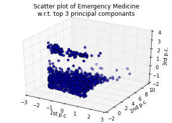
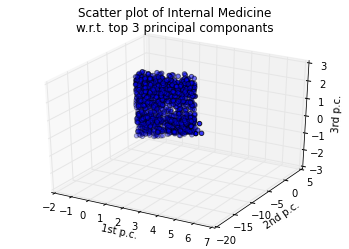
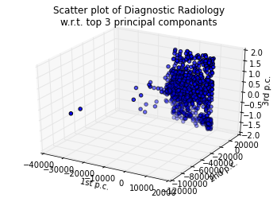
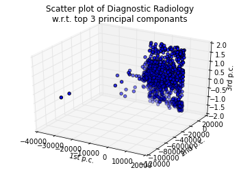

Your browser doesn't support the features required by impress.js, so you are presented with a simplified version of this presentation.
For the best experience please use the latest Chrome, Safari or Firefox browser.
Fraud detection system based on peer group comparison
Sean Chang
sean.chang@duke.edu
Statistical Science
Duke University
July 2014
Outline
Introduction
Speciality Classification
Fraud Detection System
Conclusions
What can we learn from peer group comparison?
Can we predict health care fraud accurately by knowing these information?
specialities classification
fraud detection system 1
fraud detection system 2


 

Conclusion
Future Work
Acknowledgement
Fei & Fei, Rama, Jessie, Haowei, Shailendra
Richard, Yingchu
Data Visualization:
Mike Bostock (d3.js); Bartek Szopka (impress.js); John Hunter (matplotlib)